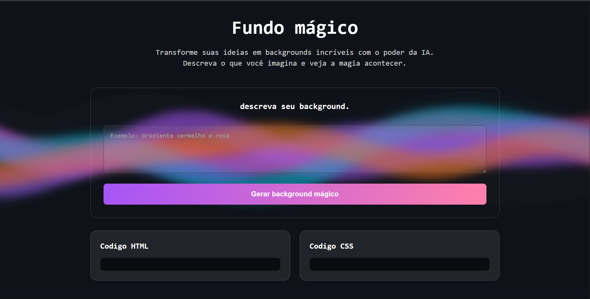
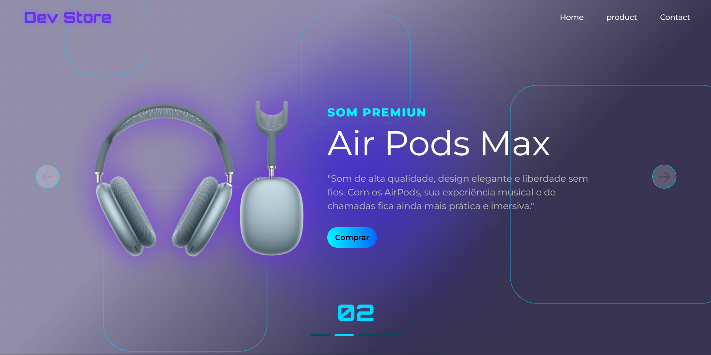
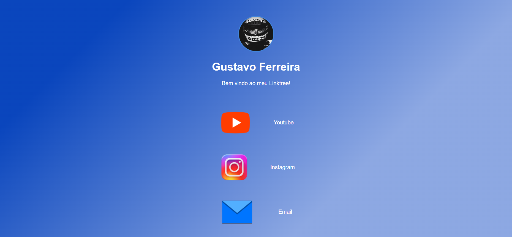

Gustavo Ferreira
Estudante de ADS
Estudante de ADS
Olá! Meu nome é Gustavo Ferreira e sou um profissional em constante evolução na área de tecnologia. Atualmente, trabalho como manipulador na indústria farmacêutica Halexistar, em Goiânia, onde adquiri experiência com processos produtivos, controle de qualidade e utilização de sistemas corporativos como o SAP. Essa vivência me proporcionou organização, atenção aos detalhes e responsabilidade no ambiente de trabalho. Paralelamente, estou cursando Análise e Desenvolvimento de Sistemas na Facunicamps, buscando me especializar na área de tecnologia, com foco em desenvolvimento e análise de dados. Tenho grande interesse por: sobre-lista Desenvolvimento web, Criação de interfaces modernas e interativas, Projetos com JavaScript, HTML e CSS Soluções que envolvem automação e tecnologia, Sou uma pessoa dedicada, com vontade de aprender continuamente e crescer profissionalmente na área de tecnologia, sempre buscando unir prática e conhecimento para desenvolver projetos cada vez melhores.

O Magic Background é uma aplicação web interativa que utiliza inteligência artificial para gerar backgrounds personalizados a partir de descrições fornecidas pelo usuário. O projeto tem como objetivo transformar ideias em visuais únicos de forma rápida e intuitiva.

About A Dev Store é uma loja virtual desenvolvida com foco em praticar conceitos de front-end e experiência do usuário. O projeto simula um e-commerce moderno, apresentando uma interface intuitiva, responsiva e organizada.

About Este projeto é uma cópia funcional do Linktree, desenvolvida com foco em praticar habilidades de front-end e criar uma página simples e elegante para centralizar múltiplos links em um único lugar. Ideal para uso pessoal, portfólio ou redes sociais, o projeto permite reunir diversos acessos importantes em uma interface moderna e responsiva.